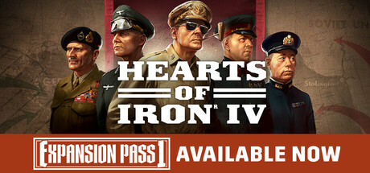

Hearts of Iron IV
Zafer parmaklarınızın ucunda! Ulusunuza liderlik etme yeteneğiniz en üstün silahınızdır; strateji oyunu Hearts of Iron IV, 2. Dünya Savaşı'nda herhangi bir ulusun komutasını ele almanızı sağlar; dünya tarihinin en ilgi çekici çatışması.
Yaş Değerlendirmesi : 7+
Bu Oyun Hakkında
Stratejik becerilerini ve siyasi içgüdülerini test edecek büyük strateji savaş oyunu Hearts of Iron IV'te, tarihin en büyük savaş makinelerinin kontrolünü eline al. Dönemin uluslarından birinin başına geçerek II. Dünya Savaşı'nı yeniden yaşa, ideolojik rakiplerine karşı etkili bir savaş vermene olanak tanıyacak endüstriyel güç merkezleri ve diplomatik ittifaklar inşa et.
Hearts of Iron IV, tarihi bir simülasyondan fazlasıdır. Verdiğin neredeyse her kararla birlikte, Festung Europa'nın kapılarını kırmak için nereye saldıracağın gibi küçük kararlardan, demokrasilerin yeniden inşası veya uzun süre önce tarihe karışmış monarşileri diriltmek gibi büyük kararlara kadar, alternatif tarihsel yollar açılacak.
Sistem Gereksinimleri
İşletim Sistemi *: Windows® 10 Home 64 bit
İşlemci: ntel® Core™ i5 2500K | AMD® Ryzen 3 2200G
Bellek: 6 GB RAM
Ekran Kartı: Nvidia® GeForce™ GTX 570 (1.28GB) | AMD® Radeon™ HD 7970 (3GB) | Intel Iris Xe G7 (Tiger Lake)
DirectX: Sürüm 9.0c
Depolama: 2 GB kullanılabilir alan
Ses Kartı: Direct X- compatible soundcard.